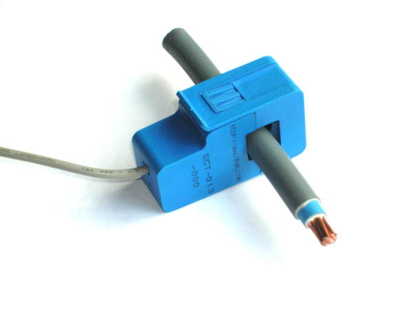

Hi,
I just got my new emontx v3.4 pre assembled and I installed the RFM12Pi module into my raspberry pi B+.
I got the local emoncms installation working and I receive data from the emontx, however I see only main voltage.
Here is the debug I get from emonhub.log
2015-02-03 10:20:22,733 DEBUG 7949 NEW FRAME : 1422976822.73 10 0 0 0 0 0 0 0 0 127 45 0 0 2015-02-03 10:20:22,740 DEBUG 7949 Timestamp : 1422976822.73 2015-02-03 10:20:22,743 DEBUG 7949 Node : 10 2015-02-03 10:20:22,746 DEBUG 7949 Values : [0, 0, 0, 0, 11647, 0] 2015-02-03 10:20:22,750 DEBUG 7949 Append to 'emonCMS' buffer => time: 1422976822.73, data: [10, 0, 0, 0, 0, 11647, 0], ref: 7949 2015-02-03 10:20:22,855 INFO emonCMS sending: http://localhost/emoncms/input/bulk.json ?apikey=E-M-O-N-C-M-S-A-P-I-K-E-Y&data=[[1422976822.73,10,0,0,0,0,11647,0]] &sentat=1422976822 2015-02-03 10:20:23,328 DEBUG emonCMS acknowledged receipt with 'ok' from http://localhost/emoncms
I'm using an AC-AC power supply hook on a 110V outlet. Jumper 2 is set to "ON". I have tried reseting the emontx many times removing the clamps from wires (but keep them hooked into the emontx), wating for the 10s red led to flash and then attaching the clamp to the wire I want to monitor.
Any help would be apreciated.
Thank you
(Wrapped long lines - BT)
Re: no data from any CTs on emontx v3.4
Have you restarted the emonTx since connecting the CT's to it?
The emonTx only tests for CTs at startup if none are found it won't check again.
The correct way would be to plug in the CT's to the emonTx, then attach the CT's to the respective power cables and lastly start (or reset) the emonTx.
Paul
Re: no data from any CTs on emontx v3.4
Yes I did. Well in fact I didn't use the "reset" button, but I unplugged the power (with CTs connected), waited a few secs, then plug it back. I tried many combination and still not getting data.
Re: no data from any CTs on emontx v3.4
How have you fitted the CTs to the wires? Like this?

Re: no data from any CTs on emontx v3.4
Yes of course.
Re: no data from any CTs on emontx v3.4
It was worth asking - quite a few people who report nil current readings have put it on a 2-core or 3-core flex.
Have you got a programmer, can you see what the emonTx prints to the serial output on start-up?
It should tell you what it thinks it's seeing, in terms of connected hardware.
Another (hopefully stupid) question - are the CT plugs fully home?
If you have a multimeter that reads mA ac, can you see a current direct from the CT (connect tip & sleeve). The calibration is 50 mA per 100 A.
Re: no data from any CTs on emontx v3.4
What do you mean, by 2 cores or 3 cores. All cables in my house have 3 wires, 1 ground 1 black and 1 white. So I put the clamp on the 3 wires cable.
What is a programmer? I can use minicom to my RFM12Pi and reboot the emontx. Would that work?
What do you mean by fully home? you want to know if the clamp is full clipped, or the 1/8 jack plugged into the emontx? I verified both and they are correctly plugged.
I'm about to receive my multi-meter that supports AC (clamp multi-meter), i should be able to check that in a few days.
Re: no data from any CTs on emontx v3.4
You must only clamp one of the 2 ac cores. by clamping both (plus the ground) you are measuring current flow in both directions eg on a 3Kw kettle you measure 3Kw going one way and (minus) -3kw going the other way. 3Kw - 3Kw = 0Kw.
Re: no data from any CTs on emontx v3.4
ok, I'll try attaching the clamp to only 1 of the core. Should I use the black or white?
Re: no data from any CTs on emontx v3.4
Is it possible to attach a clamp to a 240V cable even if the emontx is plugged into a 120V outlet? If yes, how would I need to plug it?
Re: no data from any CTs on emontx v3.4
it doesn't matter much as long as you follow a theme so that when you start adding kettle one to kettle two you don't get the same cancellation.
There is an arrow on the clamp to indicate the direction of flow, you can "flip" a clamp to get it to read the other way (pos or neg).
Re: no data from any CTs on emontx v3.4
Jean-Sebastien, You did not put the CT on the cable as shown - that picture shows very clearly a single core cable, whereas you have said all the cables in your house are 3-core. A CT works on the magnetic field surrounding the cable. If you have two cores carrying current in opposite directions - as indeed must be the case - then the magnetic fields cancel and the current transformer picks up nothing. Which is exactly what you found. The third core is a protective earth and should not be carrying any current under normal conditions, so plays no part in this.
Re: no data from any CTs on emontx v3.4
If you were to do that to your fixed wiring in the UK, it would fail to comply with BS7617.
[Edit:]
This comment applied to a picture, since removed, showing the sheath removed from a 2-core and earth cable, the 3 conductors separated and a CT clipped around one core.
Whilst valid for illustrative purposes, and for testing under controlled conditions, this practice is not safe for a permanent installation. The reason is the insulation, the brown, blue, red, yellow, black, white or green plastic immediately next to the conductor is electrically good but mechanically poor, and thus susceptible to mechanical damage. The outer sheath though is the reverse: electrically poor but mechanically strong in order to withstand the rigours of installation, etc.
Re: no data from any CTs on emontx v3.4
Thank you all. I now understand and you were right as I misunderstood how to plug the clamp. So I opened my electric panel and put the clamp only around 1 core of the cable I wanted to monitor and now it works well. I get data into emoncms.
Thanks again.